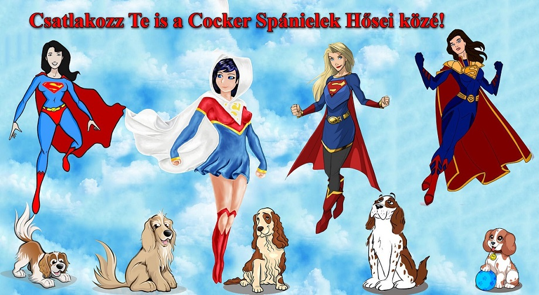

Támogassa a Cocker Rocker Spániel Fajtamentő Egyesületet – Adjunk új esélyt a spánieleknek!

HŐSÖKET TOBORZUNK ! szigorúan nyilvános projekt céljából...
Miért jó Cocker Spánielek Hősének lenni?
Mert életeket menthetsz. Néha már egyetlen megosztással, kattintással is.
Mert valami jót tehetsz a mindennapokban.
Hozzájárulhatsz mások boldogságához, nem csak a kutyáéhoz, de a leendő gazdájáéhoz is.
Mert nem jó csak úgy nemesen, önzetlenül cselekedni, anélkül, hogy feltétlenül oka lenne?
Hogyan lehetsz hős?
Fogadj Tőlünk örökbe egy kis kedvencet!
Támogass bennünket ahogyan csak tudsz!
Bánj jól a saját ebeddel!
Figyeld a híreinket és ha teheted oszd meg posztjainkat, segítségkéréseinket, heti gazdikeresőnket!
És egy új lehetőség kereteiben már VIRTUÁLIS GAZDA is lehetsz!
Mit jelent virtuális gazdának lenni?
Ha nem tudsz örökbe vagy ideglenesen befogadni egy kutyust, de mégis szeretnél neki segíteni, akkor virtuálisan is örökbe fogadhatod. Vagyis nem kell elvinned őt sehova, hanem a távolból támogathatod őt.
Etetheted, beoltathatod, hozzájárulhatsz az esetleges műtéti költségeihez.
Annyit költesz rá havi szinten, amennyit tudsz és akarsz, nincsenek elvárások.
Természetesen meg is látogathatod őt.
Ha úgy kívánod, példamutatásra hívva fel másokat és ismerőseidet, fel is tüntetjük az oldalon a nevedet.
Mit kell tenned ahhoz, hogy virtuális gazda lehess?
Válassz ki a Spánielmentés oldaláról egy szimpatikus kutyust, aki első látásra a szívedhez nőtt!
Írj nekünk a spanielmentes@gmail.com-ra és megbeszéljük a részleteket, hogyan tovább!